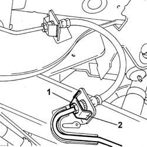
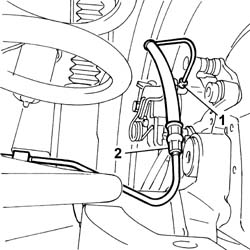

3330E30 FLEXIBLE PIPE TO REAR BRAKE CALIPERS
- Path
- Procedures > 33 BRAKES > 3330 HYDRAULIC BRAKE SYSTEM > 3330E HYDRAULIC BRAKE SYSTEM PIPES > 3330E30 FLEXIBLE PIPE TO REAR BRAKE CALIPERS
- Kind
- repair procedure (removal / refitting; the operation number is the code)
- Applies to
- all engines; all production periods
- Interactive page
- https://sloeber94.github.io/elrnDB-fUlss/en/#/179007314
Applies to: all engines; all production periods
 Removing
Removing
 Refitting
Refitting- Position the vehicle on a lift.
1. Unscrew the connector to the intermediate hose.
2. Recover the clip.
- Collect the coolant in a suitable container.

Applies to: all engines; all production periods
1. Undo the connector on the rear brke caliper.
2. Release the flexible pipe from the fastenings on the rear axle and remove it.

Applies to: all engines; all production periods
Refitting
Removing- Position the flexible pipe and secure it to the special fastenings on the rear axle.
- Tighten the connector on the rear brake caliper to the recommended torque.
 | Value - daNm | Fastening | Component | Ø |
|---|---|---|---|---|
. | (Connector on brake caliper) 1.5 | Connector | HOSE TO REAR BRAKE CALIPER | - |
- Fit the clip.
- Tighten the connector on the intermediate hose to the specified torque.
| Value - daNm | Fastening | Component | Ø |
|---|---|---|---|---|
. | (Intermediate flexible pipe connector) 1.5 | Connector | HOSE TO REAR BRAKE CALIPER | - |
Op. 0010T65 HYDRAULIC BRAKE SYSTEM BLEED AIR
Op. 0010T66 MANUAL GEARBOX OIL CHECK LEVEL AND TOP UP IF NECESSARY
- Remove the vehicle from the lift.
- Test the operation of the braking system.
Topics linked from this page (2)
- 0010T65 HYDRAULIC BRAKE SYSTEM BLEED AIR
- 0010T66 MANUAL GEARBOX OIL CHECK LEVEL AND TOP UP IF NECESSARY